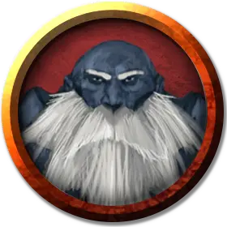

Дуэргар алхимик
Duergar Alchemist
Средний Гуманоид (Дварф), законно-злой

Класс Доспеха 16 (чешуйчатый доспех, щит)
Хиты 26 (4к8 + 8)
Скорость 25 футов
| мод | спас | ||
|---|---|---|---|
| СИЛ | 14 | +2 | +2 |
| ЛОВ | 11 | +0 | +0 |
| ТЕЛ | 14 | +2 | +2 |
| мод | спас | ||
|---|---|---|---|
| ИНТ | 11 | +0 | +0 |
| МДР | 10 | +0 | +0 |
| ХАР | 9 | −1 | −1 |
Сопротивление урону яд
Чувства тёмное зрение 120 футов, пассивное Восприятие 10
Языки Дварфийский, Подземный
Опасность 1 (200 опыта)
Бонус мастерства +2
Особенности
Дуэргарская устойчивость. Дуэргар совершает с преимуществом спасброски от яда, заклинаний и иллюзий, а также спасброски для сопротивления очарованию и параличу.
Чувствительность к солнечному свету. Находясь на солнечном свету, дуэргар совершает с помехой броски атаки, а также проверки Мудрости (Восприятие), полагающиеся на зрение.
Действия
Боевая кирка. Рукопашная атака оружием: +4 к попаданию, досягаемость 5 футов, одна цель. Попадание: 6 (1к8 + 2) колющего урона или 11 (2к8 + 2) колющего урона, пока увеличен.
Флакон с кислотой. Дальнобойная атака оружием: +4 к попаданию, дистанция 20 футов, одна цель. Попадание: 7 (2к6) урона кислотой.
Алхимический огонь. Дальнобойная атака оружием: +4 к попаданию, дистанция 20 футов, одна цель. Попадание: 2 (1к4) урона огнём в начале каждого хода цели. Существо может попытаться окончить эффект, потратив действие на совершение проверки Ловкости Сл 10 и потушить огонь в случае успеха.
Увеличение (перезаряжается после короткого или продолжительного отдыха). На 1 минуту дуэргар магическим образом увеличивается в размере вместе со всем, что несёт и носит. Пока дуэргар увеличен, он является Большого размера, удваивает кости урона от атак оружием, основанных на Силе (уже учтено в атаке) и совершает с преимуществом проверки и спасброски Силы. Если дуэргару не хватает места, чтобы стать Большим, он приобретает максимальный размер, допустимый имеющимся пространством.
Невидимость (перезаряжается после короткого или продолжительного отдыха). Дуэргар магическим образом становится невидимым в течение 1 часа или пока он не атакует, наложит заклинание, использует своё «Увеличение» или потеряет концентрацию (как если бы он концентрировался на заклинании). Любое снаряжение, одетое или носимое дуэргаром, становится невидимым вместе с ним.
Описание
Тираничные дуэргары, также известные как серые дварфы, обитают в фантастических городах глубоко в Подземье. Используя древние знания дварфов и мириады рабов, они неустанно трудятся над расширением своих подземных королевств.
Большинство дуэргаров (включая женщин) — лысые, а их кожа пепельно-серая. Они носят серые одежды, которые помогают слиться с камнем, и простые украшения, которые отражают их суровый и практичный нрав.
Рабы господ. Дуэргары когда-то были дварфами, до того как их жадность и бесконечные рыскания под землёй не привели их к встрече со свежевателями разума. Поколениями находясь в плену иллитидов, дварфы, в конечном счёте, отвоевали свою независимость при помощи злого божества Ладугуэра. Однако рабство навсегда изменило их, сделав их дух тёмным, а самих дуэргаров такими же злыми, как и тираны, от которых они освободились. Несмотря на полученную свободу, дуэргары — суровые, пессимистичные и недоверчивые существа, которые всегда тяжело трудятся и жалуются, что не помнят, что значит быть счастливым или гордым. Их произведения и достижения долговечны, но лишены тепла, и им чуждо искусство.
Дуэргары воюют со своими дварфскими сородичами и другими подземными расами. Они заключают союзы, когда это выгодно, и нарушают их, когда в них более нет выгоды. Они берут рабов, чтобы те работали в Подземье, относясь к ним как к бесплатной рабочей силе и грубому эквиваленту валюты.
Крепкие как камень. Как и дварфы, дуэргары крепко сложены. Вдобавок к их физической выносливости, они обладают невероятной ментальной стойкостью ещё со времён рабства у иллитидов. Разум дуэргара — это крепость, способная отражать очарования, иллюзии и другие заклинания.
Рождённые во тьме. Подземье насыщено странными магическими силами, которые дуэргары впитали за поколения рабства. Дуэргары могут увеличиться в размере и силе на короткое время, становясь могучими воинами, размерами сравниваясь с ограми. Если же они столкнутся с противником, который им не по зубам, или во время шпионажа за существами, нарушающими их границы, дуэргары могут становиться невидимыми, сливаясь с тьмой.
Эоны, проведённые в Подземье, также отточили их тёмное зрение, позволяя им во тьме видеть вдвое дальше, чем другим дварфам. Однако за это приходится платить, ведь зрению дуэргаров угрожает солнечный свет.
Дьявольский хозяин. Известно, что Асмодей, Владыка Девяти Преисподних, изображает богов дуэргаров, чтобы взращивать зло, тлеющее в сердцах серых дварфов. Предлагая им божественное провидение и отмщение их врагам, он в то же время подталкивает их к всё более тираническим действиям и скрывает свою истинную личину.